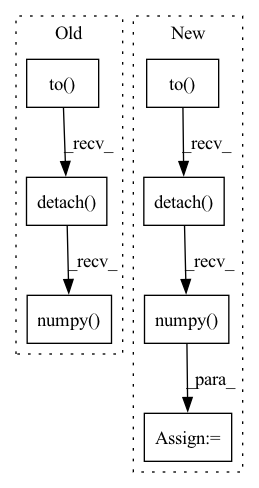

Pattern ID :4731
Before Change
) //// sorts the batch wrt the length of sequences
pred = model(
torch.autograd.Variable(batch).to( device) , lengths.cpu().numpy()
) //// perform forward pass
pred = torch.squeeze(pred)
loss = criterion(
pred.to(device), torch.autograd.Variable(targets.float()).to(device)
) //// compute loss
pred_val = pred >= 0.5 //// get predictions
y_true += list(targets.int())
y_pred += list(pred_val.data.int().detach().cpu().numpy() )
total_loss += loss
acc = accuracy_score(y_true, y_pred) //// computing accuracy using sklearn"s functionAfter Change
pred = model(
sent1.to(device),
sent2.to(device),
sents1_len.to( device) ,
sents2_len.to(device),
)
//// compute loss
loss = criterion(
pred.to(device), torch.autograd.Variable(targets.float()).to(device)
)
y_true += list(targets.float())
y_pred += list(pred.data.float().detach().cpu().numpy() )
total_loss += loss
//// computing accuracy using sklearn"s function
acc = r2_score(y_true, y_pred)In pattern: SUPERPATTERN
Frequency: 3
Non-data size: 7
Instances Fragment ID: 16790144
Project Name: shahrukhx01/siamese-nn-semantic-text-similarity
Commit Name: f3d054dd14ef532c408b1306c3341115777ac22f
Time: 2021-12-30
Author: sk28671@gmail.com
File Name: siamese_sts/trainer/train.py
M Class Name: AnonimousClass
N Class Name: AnonimousClass
M Method Name: evaluate_dev_set(5)
N Method Name: evaluate_dev_set(5)
M Parent Class:
N Parent Class:
M File Name: siamese_sts/trainer/train.py
N File Name: siamese_sts/trainer/train.py
M Start Line: 78
M End Line: 95
N Start Line: 91
N End Line: 116
Before Change
model.zero_grad()
pred = model(
torch.autograd.Variable(batch).to( device) , lengths.cpu().numpy()
) //// perform forward pass
pred = torch.squeeze(pred)
loss = criterion(
pred.to(device), torch.autograd.Variable(targets.float()).to(device)
) //// compute loss
loss.backward() //// perform backward pass
optimizer.step() //// update weights
pred_val = pred >= 0.5 //// get predictions
y_true += list(targets.int().numpy()) //// accumulate targets from batch
y_pred += list(
pred_val.data.int().detach().cpu().numpy()
) //// accumulate preds from batch
total_loss += loss //// accumulate train loss
acc = accuracy_score(After Change
model.zero_grad()
//// perform forward pass
pred = model(
sent1.to( device) ,
sent2.to(device),
sents1_len.to(device),
sents2_len.to(device),
)
//// compute loss
loss = criterion(
pred.to(device), torch.autograd.Variable(targets.float()).to(device)
)
//// perform backward pass
loss.backward()
//// update weights
optimizer.step()
//// accumulate targets from batch
y_true += list(targets.float().numpy())
//// accumulate preds from batch
y_pred += list(pred.data.float().detach().cpu().numpy() )
//// accumulate train loss
total_loss += loss Fragment ID: 16790147
Project Name: shahrukhx01/siamese-nn-semantic-text-similarity
Commit Name: f3d054dd14ef532c408b1306c3341115777ac22f
Time: 2021-12-30
Author: sk28671@gmail.com
File Name: siamese_sts/trainer/train.py
M Class Name: AnonimousClass
N Class Name: AnonimousClass
M Method Name: train_model(6)
N Method Name: train_model(6)
M Parent Class:
N Parent Class:
M File Name: siamese_sts/trainer/train.py
N File Name: siamese_sts/trainer/train.py
M Start Line: 16
M End Line: 47
N Start Line: 16
N End Line: 59
Before Change
if token_count < 256:
image_tokens = model.generate_image_tokens(text, seed, grid_size ** 2)
print("image tokens", image_tokens.to("cpu").detach().numpy() )
else:
image = model.generate_image(text, seed, grid_size)
save_image(image, image_path)After Change
if token_count < 256:
image_tokens = model.generate_image_tokens(text, seed, grid_size ** 2)
image_tokens = image_tokens[:, :token_count].to("cpu").detach().numpy()
print("image tokens", image_tokens)
else:
image = model.generate_image(text, seed, grid_size)
save_image(image, image_path) Fragment ID: 16790136
Project Name: kuprel/min-dalle
Commit Name: 6f617fe98f268c148d520ff8f32466091c786951
Time: 2022-07-04
Author: brkuprel@gmail.com
File Name: image_from_text.py
M Class Name: AnonimousClass
N Class Name: AnonimousClass
M Method Name: generate_image(7)
N Method Name: generate_image(7)
M Parent Class:
N Parent Class:
M File Name: image_from_text.py
N File Name: image_from_text.py
M Start Line: 56
M End Line: 57
N Start Line: 56
N End Line: 58